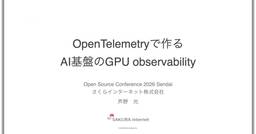

my-tech-blog-rss
企業のテックブログの更新をまとめた
RSSフィードを配信しています
コピー
Slackに貼り付けると更新を受け取ることができます
RSS URL
コピー
ALL
Zenn
Qiita
はてブ
Menthas
Publickey
InfoQ
Think IT
ITmedia
TechCrunch
Hacker News
DevelopersIO
企業テックブログ
AI情報
国内テックブログ
AI
Engineering
Platform
Programming
Database
AWS
Google Cloud
Azure
セキュリティ
Security Advisory
Speaker Deck
技術書
人気フィード
ブログ一覧
国内テックブログの直近1週間の更新
7/24 (金)
【開催レポート・後編】第6回 京大ミートアップ｜集合的予測符号化から見る人間とAIの共生
1
GMO Developers
Session3『集合的予測符号化と人間AI共生的アライメント』 谷口 忠大 氏京都大学 大学院情報学研究科 教授 最後に登壇したのは京都大学の谷口忠大氏。長年「記号創発ロボティクス」を掲げ、人間の発達過程をモデルにロボ […]
16時間前
【開催レポート・前編】第6回 京大ミートアップ｜フィジカルAIとAI時代の知性
1
GMO Developers
イベント概要 第6回 京大ミートアップ supported by GMO考え・人と共生し・走るAI：ヒューマノイド競技大会への挑戦 日時：2026年6月25日（木） 17:30-20:30場所：京都大学 学術情報メディア […]
16時間前
Cycloud 新基盤の全貌 第四回: IaaS 編
CyberAgent Developers Blog | サイバーエージェント デベロッパーズブログ
はじめに CIU（CyberAgent group Infrastructure Unit）で Ia ...
18時間前
7/23 (木)
AI Readyな開発環境の整え方
LINEヤフー Tech Blog (LY Corporation Tech Blog
Orchestration Guildメンバーの迫川です。普段はAgent platformの開発をしています。この記事は、社内ワークショップOrchestration Development Wor...
2日前

OpenTelemetryで作るAI基盤のGPUオブザーバビリティ
さくらのナレッジ
この記事はオープンソースカンファレンス2026 Sendai(OSC仙台)での発表をさくナレ編集部で記事化したものです。 はじめに さくらインターネットの芦野(@tar_xzvff)です。サービス統括本部 サービス開発部 […]
2日前
Cycloud 新基盤の全貌 第三回: NW編
2
CyberAgent Developers Blog | サイバーエージェント デベロッパーズブログ
はじめに はじめまして。CyberAgent group Infrastructure Unit（C ...
2日前
7/22 (水)
2026年8月の技術系イベント予定
LINEヤフー Tech Blog (LY Corporation Tech Blog
LINEヤフー株式会社では、技術に関するイベントや勉強会の主催・協賛などを行っています。最新情報は各リンク先でご確認ください。タイミングによっては、申し込み開始前や既に満席となっていることがあります。...
3日前
Cycloud 新基盤の全貌 第二回: HW 編
CyberAgent Developers Blog | サイバーエージェント デベロッパーズブログ
はじめに はじめまして、CyberAgent group Infrastructure Unit（C ...
3日前
7/21 (火)
1つのLLMに聞き続けるのをやめて、Gemini・Claude・GPTを「討論・推敲・メタ認知」させるAgent Skillsを開発してみた
CyberAgent Developers Blog | サイバーエージェント デベロッパーズブログ
はじめに こんにちは。サイバーエージェント AIオペレーション室の李俊浩（@buddypia）です。 ...
3日前
【EXPERT CROSS #2】暗号技術の可能性を未来につなぐ、「暗号のおねぇさん」の歩み（後編）
GMO Developers
組織と本人の両方を変えていくエキスパート活動 ———前編でも、新たな接点が広がってきたというお話がありました。エキスパートとして活動するなかで、ご自身の中で変わったものがあれば教えてください。 ———菅野さんから見て、エ […]
4日前
【EXPERT CROSS #2】「暗号のおねぇさん」が国際標準化の場で残していく、インターネットへの「爪痕」（前編）
GMO Developers
GMOから世界に羽ばたく「暗号のおねぇさん」 酒見由美（さけみ ゆみ）｜GMOコネクト株式会社 開発支援事業部 菅野哲（かんの さとる）｜GMOコネクト株式会社 執行役員CTO ———まずは、お二方のこれまでのご経歴をお […]
4日前
要件策定から本番環境への展開までの完全自動化を目指して96プロダクトのAI活用力を強化した話｜プロダクトのキーパーソン向け施策『AIナレッジ共有会』
1
CyberAgent Developers Blog | サイバーエージェント デベロッパーズブログ
こんにちは。株式会社サイバーエージェントの経営推進本部に所属している片岡です。 2005年に中途入社 ...
4日前
Cycloud 新基盤の全貌 第一回: 新リージョン基盤の全体像
8
CyberAgent Developers Blog | サイバーエージェント デベロッパーズブログ
はじめに はじめまして。CyberAgent group Infrastructure Unit（C ...
4日前